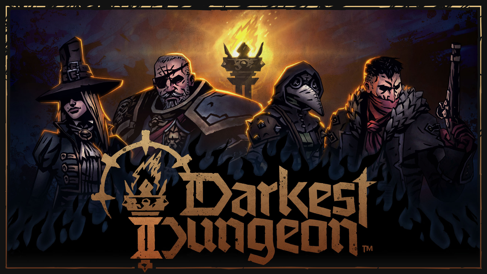

Qué es Darkest Dungeon 2?
Darkest Dungeon 2 es una secuela a la homonima serie de videojuegos RPG Lovecraftiano que pondrá a prueba hasta al jugador más hardcore, ahora con un enfásis más grande en la historia del juego y personajes, junto con el combate. Es un juego con una gran ambientación, banda sonora exquisita y un arte que representa muy bien lo que se vería en una obra de H.P Lovecraft. Por esto y por ser uno de mis juegos favoritos de todos los tiempos he decidido hacer una guía de Darkest Dungeon 2
 |
¿Cómo se juega?
Darkest Dungeon 2 es un juego de combate por turnos, el objetivo del juego es atravesar 3 regiones diferentes (sin contar la primera de tutorial) hasta llegar a la cuarta región, La Montaña, en la cuál estará el último jefe del capítulo en el que te encuentres hay 5 capítulos en total cada uno más difícil que el anterior. Entre lo más llamativo del juego y lo que lo diferencia de otros es que tienes que cuidar el estrés de tus personajes y las relaciones que tengan, ambas cosas las explicare más adelante. Antes de iniciar una partida el jugador elegirá el capítulo que quiere y después 4 personajes que utilizará. Una vez que haya empezado la partida el juego se dividirá en 4 partes diferentes:
- La posada: Antes de ir a una nueva región y al terminar una siempre hay un lugar que las conecta, La posada. Un lugar donde tus heroés recuperaran vida, podrán desestresarse y mejorar las relaciones que tengan entre ellos también puedes mejorar habilidades en la posada por lo que elige sabiamente que personajes serán tu prioridad.
- El viaje: El jugador atravesará las diferentes regiones en una carrosa en donde tien que atravesar una cantidad de nodos hasta llegar a la siguiente posada, cada región esta compuesta por diferentes nodos donde podrán pasar diferentes cosas como batallas, comprar a un mercader, descubrir la historia de tus personajes lo que ayuda a desbloquear nuevas habilidades, etc. Entre los nodos más importante esta el del Lair (Calabozo), en donde habrán 3 combates, incrementando en dificultad y recompensas mientras más combates tengas, concluyendo el tercer combate con el jefe de la región el cuál si sales victorioso no solo ganarás mucho dinero, también objetos y el trofeo de la región con el que podrás acceder a la montaña a partir del capítulo 2. El jugador contará con un minimapa que le ayudará para elegir que nodos elegir o evitar, aunque no todos los nodos serán visibles. Mientras estes viajando tienes que cuidar la esperanza que llevas en tu carruaje, la cual sirve como una linterna, puedes recuperar esperanza en los nodos donde ayudas gente.
- El combate: Cuándo el jugador entre en un nodo de combate o por alguna intercción en algún nodo empezará un combate. El jugador contará con 4 personajes de derecha a izq los primeros 2 rangos serán tu tange y tus principales fuentes de daño directo pero solo podrán golpear a lo mucho los rangos 1, 2 y 3 del enemigo, y el rango 3 y 4 son para tus personajes de soporte se encargarán de aplicar efectos al enemigos o hacer daño indirecto cómo sería por veneno, sangrado o quemadura. Los enemigos tendrán una organización y roles similares por lo que se recomienda acabar con los enemigos de rango 3 y 4 primero pues ellos también pueden generar estrés fácilmente, si te preguntas "¿Cómo que estres?" Bueno pues en Darkest Dungeon 2 no solo te tienes que preocupar por la vida de tus personajes, también tienes la barra de estrés mientras más estrés más insultos tendrán tus personajes los unos a los otros y si la barra de estrés llega a su máximo tu personaje tendrá una prueba de 70% de que falle la prueba, de ser así tu personaje se volvera loco dificultando las relaciones que tenga con el resto del equipo y bajandole la vida al 15%, en cambio si la supera tu personaje se volverá virtuoso sanado toda su vida,mejorando su relación con los otros personajes y obteniendo unos tokens positivos. El sistema de token es algo complejo pero en general hay tokens que aumentan tu daño, te dan chance de evadir un ataque enemigo, y los inversos de estos hay más pero estos son los más comunes y los más útiles
- La ciudad viviente: Al terminar una partida, ya sea exitosa o un fracaso el jugador podrá utilizar velas que son una moneda dentro del juego que se guarda entre partidas, esta te ayuda a desbloquear nuevos objetos, nuevos modos de jugar personajes, entre otras cosas. Por lo que cada partida el juego será más "fácil" de terminarlo.
Tips & Trucos
Comenzaré con el Tip más importante del juego y es que no siempre vas a ganar, el juego esta diseñado para que tengas una chance pero no siempre esta garantizada. Recuerda el fracaso dentro de este juego es muy presente por lo que antes de cualquier tip del juego lo mejor que te puedo decir es se paciente.
- Cuando entres a un combate recuerda que la duración promedio debe de ser entre 3 a 4 turnos, esto no significa que ya acabe en 3 turnos, pero más como que para el tercer turno la batalla ya debería de estar decidida.
- Durante las dos primeras regiones recomiendo mucho gastar todo tu dinero en mejorar las relaciones de tu equipo, creeme hace un efecto de bola de nieve, en otras palabras gradualmente el juego será más fácil solo por eso.
- Te recomiendo ir por el trofeo de la región cuándo estes en tu útlima región para acceder a la Montaña, pues a este punto tu equipo ya esta mejor equipado y con habilidades mejoradas, aunque también puedes ir al inicio de tu partida si es que ves que el trofeo es muy bueno.
- Siempre lleva al menos 2 linternas contigo, a veces las regiones son muy largas y puede pasar que pases varios nodos sin ayudar gente (recargar esperanza), por lo que siempre lleva 2 linternas por si acaso, no son muy caras pero si son muy útiles. Si llegas a perder toda la esperanza tendras un combate contra los enemigos más fuertes del juego sin nada de recompensa al terminar el combate.
- Anteriormente había mencionado los tokens, pero sabías que con la tecla CTRL puedes ver todos los tokens del juego. Y además puedes pasar el mouse sobre cualquier token para una breve descripción de lo que hace.
- Otro shortcut útil es que si pones el cursor del mouse en un enemigo y después usas shift podrás ver los Stats, Resistencias y Movimientos del enemigo. Muy útil pues te muestra todo lo que necesitas saber.
- Al momento de crear un equipo a lo mejor crees que cada equipo debe de tener un tanque, una unidad de soporte que cure y otra que haga daño indirecto y así, pero la realidad es que lo más importante en este juego es el daño que un personaje haga, el único rol que necesitas es el daño pues este juego recompensa más un estilo de juego más agresivo que pasivo.
- Al momento de crear un equipo a lo mejor crees que cada equipo debe de tener un tanque, una unidad de soporte que cure y otra que haga daño indirecto y así, pero la realidad es que lo más importante en este juego es el daño que un personaje haga, el único rol que necesitas es el daño pues este juego recompensa más un estilo de juego más agresivo que pasivo.
- Cuando estes en La Ciudad Viviente y quieres subir un personaje te recomiendo mucho que no subas a ninguno al máximo (con excepción al Bounty Hunter), hasta lo mucho subelo a su tercer subclase o hasta su última mejora de Death Blow.
- Recuerda ningún personaje es realmente malo en este juego, lo que existe son malos equipos y malos jugadores. Cada personaje tiene sus fortalezas y debilidades por lo que si no te funciona un equipo considera que sinergías tienen los unos con los otros y cómo podrías mejorar.
- En la Ciudad Viviente recomiendo invertir velas en obtener nuevos objetos de combate, y objetos de posada principalmente la Savia curativa y el pedazo de Pan, y también la primera mascota el Mapache es muy buena para empezar pues facilita las relaciones entre tus personajes.
- Recomiendo desbloquear algunos personajes como el Flagelante en partícular al inicio del juego pues tiene una mecánica que mientras más estres y menos vida tenga mejor se volverá, y también a la Hellion y al BountyHunter por su daño y flexibilidad.